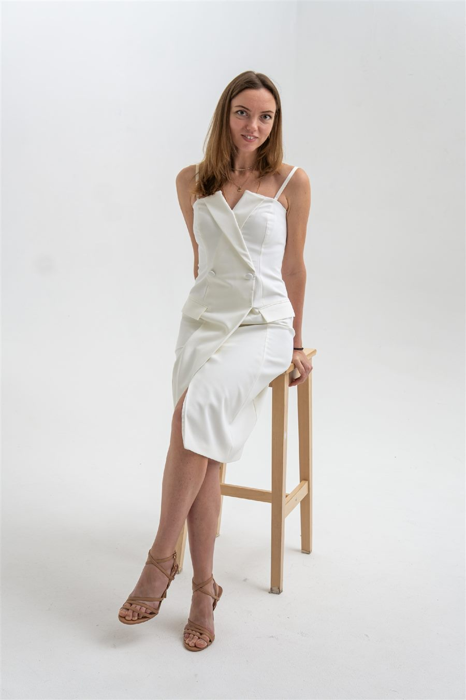
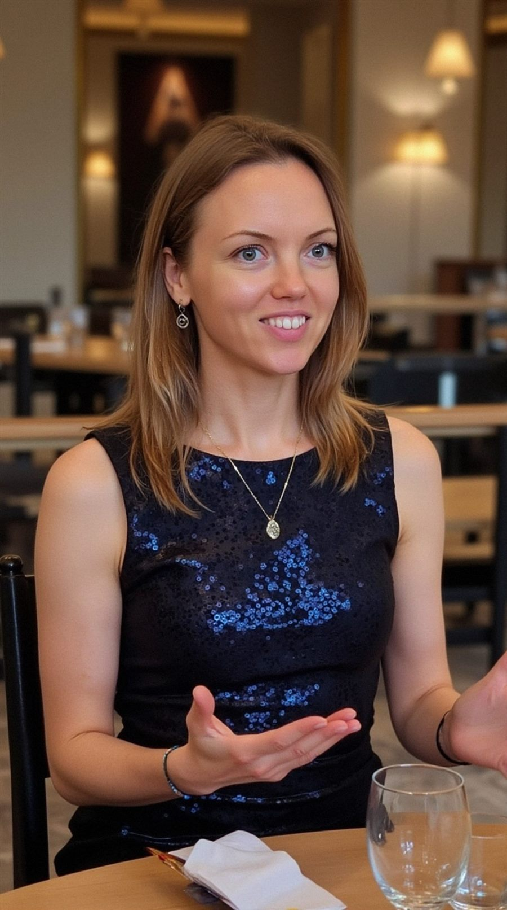
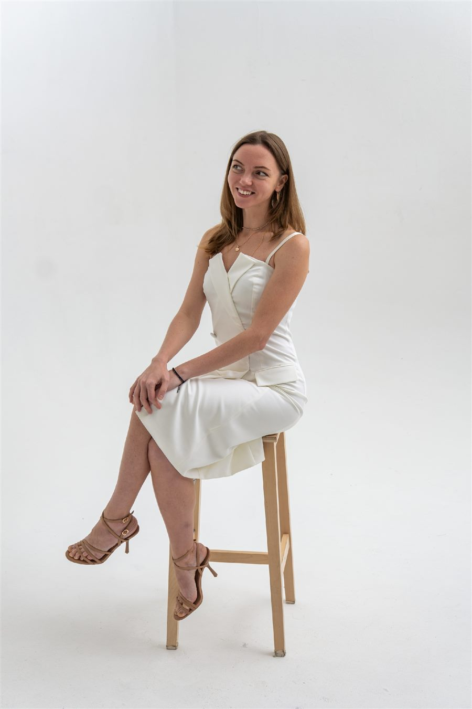

Я ищу причины усталости, тяги к сладкому, вздутия и лишнего веса и помогаю выстроить ЗОЖ в удовольствие: без запретов и жёстких диет, вкусно и с любовью к себе.

Это не «просто возраст» и не норма. Это сигналы организма, и с ними можно работать.

Редко проблема только в еде. Обычно самочувствие складывается из нескольких факторов, поэтому смотрим на всё сразу:
Разбираем ваши опросники и историю здоровья. Вы получаете первую обратную связь и список анализов.
По вашим анализам собираю личную стратегию: что менять в первую очередь.
Личный чат со мной в Telegram или MAX: дневник питания, ответы на вопросы, обратная связь между созвонами. 5 000 ₽ за консультации засчитываются в первый месяц.
Протокол питания, имитирующего голодание (FMD). Он запускает процессы клеточного обновления и омоложения организма. Проходим вместе в группе, с поддержкой и меню.
Работаем с датчиком непрерывного мониторинга глюкозы и видим, как еда, стресс и движение влияют на ваш сахар. Датчик покупается отдельно.
Мини-курс о том, как вернуть энергию. Напишите мне, чтобы узнать дату старта.
Большая программа: питание, сон, движение, стресс и привычки, которые помогают дольше оставаться молодой. Напишите мне, чтобы узнать дату старта.
Истории анонимные, клиентки дали согласие на публикацию.
Результаты индивидуальны и зависят от исходного состояния.

Здоровьем я интересовалась давно: спорт, питание, травы, БАДы, ЗОЖ. Тогда это было хаотично, и я не называла это нутрициологией. Тяжёлая болезнь папы стала толчком разобраться глубже и системно. Так я пришла в Международный институт функциональной интегративной медицины (МИФИМ) и прошла все 3 ступени.
Практикую с июля 2025 года. Веду групповые программы, сопровождаю клиентов лично, работаю трекером в закрытом клубе Натальи Зубаревой «Код женщины» и куратором ЗОЖ-клуба бизнес-сообщества «Терра» в Санкт-Петербурге.
Я верю, что конечная цель нутрициологии — не просто хорошие анализы, а высокое качество жизни. Жизни, в которую хочется быть влюблённой. Поэтому мой подход — биохимия любви к себе: здоровье через заботу и удовольствие, а не через ограничения.
Диетолог — врач: он ставит диагнозы и назначает лечебное питание при заболеваниях. Нутрициолог не лечит, а помогает выстроить питание и образ жизни: найти дефициты, наладить сон, энергию и пищеварение, убрать тягу к сладкому. При заболеваниях это поддержка вместе с лечением у врача.
Первая консультация длится 1,5 часа и стоит 3 000 ₽. Вторая встреча с разбором анализов и личной стратегией — 2 000 ₽. Персональное сопровождение — 30 000 ₽ в месяц, при этом 5 000 ₽ за две консультации засчитываются в первый месяц.
Чаще всего — вернуть энергию. А ещё: перестать болеть «каждые два месяца», убрать «туман в голове», наладить сон и пищеварение, перестать есть сладкое, снизить вес, найти и закрыть дефициты, улучшить состояние кожи и волос, поддержать организм с возрастом.
Да, я работаю именно так: ищем причины, по которым вес растёт, — сон, стресс, перепады сахара, дефициты, пищеварение — и выстраиваем питание по принципу 80/20. Например, клиентка 40 лет за 1,5 месяца сопровождения сбросила 6 кг без урезания порций. Результаты у всех индивидуальны.
Это 10-дневная групповая программа по протоколу питания, имитирующего голодание (FMD). Он запускает процессы клеточного обновления. Проходим вместе в Telegram-канале (с дублем в MAX): меню, поддержка и ответы на вопросы. Стоимость — 5 000 ₽. FMD подходит не всем, поэтому перед участием напишите мне, и мы обсудим ваше состояние здоровья.
Датчик показывает, как именно ваш сахар реагирует на еду, стресс и движение. В программе «Код глюкозы» участники увидели, что стресс влияет на глюкозу сильнее сладостей, а активность после еды заметно снижает сахар. Программа длится 3 недели и стоит 10 000 ₽, датчик покупается отдельно. Это не диагностика, а способ лучше понять свой организм.
У нас личный чат в Telegram или MAX: вы ведёте дневник питания, присылаете ежедневные отчёты и вопросы, я даю обратную связь, при необходимости — дополнительные анализы и материалы. Плюс созвоны. Сопровождение длится от 1,5 месяцев.
Да. Большинство моих клиентов — женщины 35–55 лет, но мужчины тоже приходят.
Нет. Сначала консультация, на ней я дам список анализов, которые нужны именно вам.
Нет. Мы выстраиваем питание и привычки, которые можно удерживать долго, по принципу 80/20.
Да, вся работа проходит онлайн.
Всё то же самое можно делать в MAX или ВКонтакте.
Нет. Нутрициолог не ставит диагнозы и не заменяет врача. Я работаю с питанием и образом жизни, а при заболеваниях, в том числе онкологических, это поддержка вместе с лечением у врача.
Расскажите, что вас беспокоит, и я подскажу, с чего начать.
+7 931 232-85-27